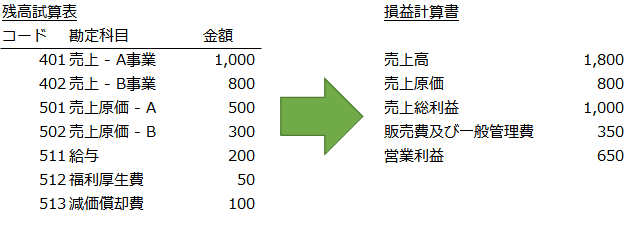
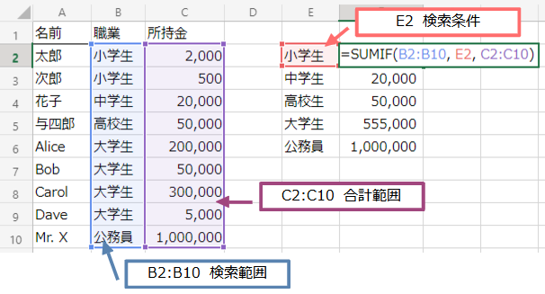
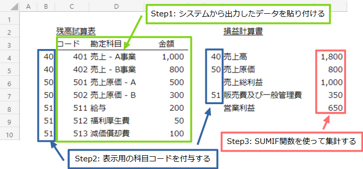
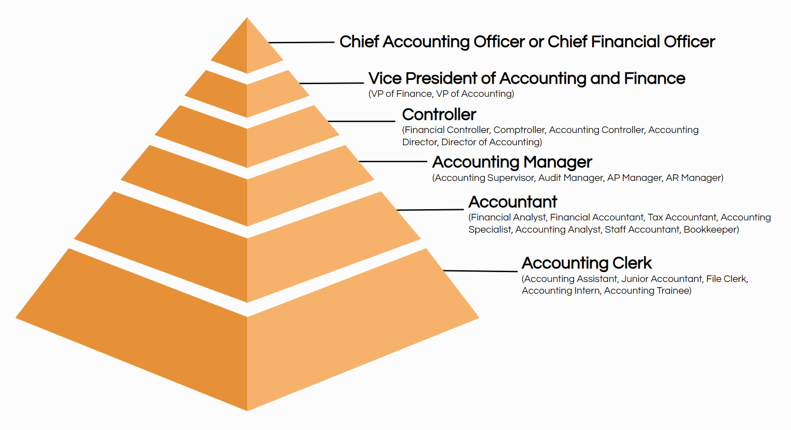

Excelで組替表を作る
- 会計/経理
> 組替表ってなんですか？
簿記の検定試験と違い、実務では使用する勘定科目が膨大であることもあって、合計残高試算表から財務諸表（上場企業などが金融庁に提出する書類）や計算書類（株主総会や税務申告のための作成する書類）を作成することがそれなりに手間だったりします。
会計システムから自動で出力できれば良いのですが、区分掲記しなければならない科目が変動すると、マスタやシステムの変更が必要となります。また各勘定科目とBS、PLで表示される数値のつながりを検証をしたり、監査人に説明したりしなければならないため、合計残高試算表をExcelで加工して作成している会社が多いのではないでしょうか。この勘定科目から財務諸表や計算書類の表示科目へ変換する資料のことを組替表と呼びます。
イメージとしては次のような資料になります。
左の試算表は会計システムから出力されたデータとなり、右が最終的な成果物となります。
> 組替表を作る手順を教えて！
Excelで組替表を作成には、SUMIF関数使うことが前提となります。なので、まずSUMIF関数を説明します。
SUMIF関数の使い方
SUMIF関数は、指定した条件を満たすデータの合計値を求める関数です。次のように３つの引数を指定して使います。
=SUMIF(検索範囲, 検索条件, 合計範囲)
具体的な使い方は下の図のようになります。左側（A1セルからC10セル）が元となるデータで、右側に集計結果を示しています。今回は、元のデータから職業別の所持金の合計を集計しています。B列が検索範囲、C列が合計する対象となり、検索条件としてE2セルを指定しています。
SUMIF関数がB列のセルを１つ１つチェックし、E2セルと同じ内容であればC列の同じ行にある数値を集計していきます。図の場合には、B2セルとB3セルの値が検索条件を満たすので、C2セルとC3セルの合計値(2,500)が計算されます。
組替表の作成手順
具体的な作業の流れは以下のようになります。
- 会計システムから元データを出力する
- 財務諸表用の科目コードを付与する
- SUMIF関数で集計する
SUMIF関数の使い方が分かっていれば、後は、どのように集計コードを付与するかだけの問題となります。ここで付与する科目コードは、Excelの中でしか使わないので、あまり難しく考えずに2, 3桁程度の科目コードで十分です。財務諸表で使用する科目はあまり多くないので、長い桁は不要です。
上の図のように３ステップで簡単に集計することができます。説明のため、図はかなり簡易的な財務諸表の形となっていますが、実際の作業でも行うことは同じなので難しいことは無いはずです。
SUMIF関数は組替表だけではなく、振替仕訳の集計などにも使えるため、経理であればぜひ覚えておくべき関数の１つと言えます。
RubyでExcelを操る！
- プログラミング
> Excel操作が大変なのでどうにかしたい
今どきは、Excelを操作するライブラリが充実しているので、簡単な作業であればネットに書かれているサンプルをコピーして少し書き換えるだけで、すぐに作業を自動化できます。 今回はプログラミング言語Rubyを使ってExcel操作の方法を説明して行きます。なお、Ruby自体のインストールや環境構築は既に終わているものとして説明を進めます。
rubyXLのインストール
rubyを使ってExcelの読み書きを行うためにrubyXLというライブラリをインストールしましょう。以下のコマンドで簡単にインストールできます。
rubyXLの使い方
説明のため次のような内容のExcelファイル(book.xlsx)を用意しました。このファイルを読み込んで、いろいろな操作を行ってみましょう。

まずは、Excelを開いてA1セルの値（今回のExcelでは「太郎」）を出力してみます。
book = RubyXL::Parser.parse("book.xlsx")
sheet = book[0]
puts sheet[0][0].value #=> 太郎
１行目に項目名を入れた方が分かりやすいので、項目名を追加して新しくbook2.xlsxとしてファイルを保存してみます。シートに行を追加するinsert_row()を使うためには、２行目のようにrequireする必要があるので注意してください。
require "rubyXL/convenience_methods/worksheet"
book = RubyXL::Parser.parse("book.xlsx")
sheet = book[0]
sheet.insert_row(0) # 一番上に行を追加する
sheet.add_cell(0, 0, "名前") # A1セル
sheet.add_cell(0, 1, "職業") # B1セル
sheet.add_cell(0, 2, "年齢") # C1セル
sheet.add_cell(0, 3, "所持金") # D1セル
book.write("book2.xlsx")
このスクリプトを実行すると、Excelファイルは次のようになります。

簡単な分析をやってみる
それでは次に、book.xslxのデータを基に簡単な分析をしてみましょう。職業別の所持金の平均値を求めてみます。
プログラムの流れは次の通りです。
- Excelから１行ずつデータを読込み、職業をキー、所持金の配列を値にしたハッシュを作成する
（例： { "小学生" => [2000, 500], "中学生" => [20000] } ）。 - 1.で作成した配列をArray#sumで足し合わせ、得られた合計を配列の数で割る。
require "rubyXL/convenience_methods"
book = RubyXL::Parser.parse("book.xlsx")
sheet = book[0]
# 最終行を取得
max_row = sheet.map {|row| row && row.cells.each { |cell| cell && cell.value != nil}}.size
money_data = {}
(0..max_row-1).each do |i|
if money_data.has_key?(sheet[i][1].value)
money_data[sheet[i][1].value] << sheet[i][3].value
else
money_data[sheet[i][1].value] = [sheet[i][3].value]
end
end
money_data.each do |key, value|
puts "#{key} - #{value.sum.fdiv(value.length)}"
end
このプログラムの実行結果：
中学生 - 20000.0
高校生 - 50000.0
大学生 - 138750.0
公務員 - 1000000.0
正しく職業別の平均値が得られています。このプログラムであれば、職業の種類が増えてもデータの数が増えても正しく平均値を集計してくれます。
今回紹介した程度の計算であれば、Excelのピボットテーブルを使えばすぐに求めることができます。しかし、同じフォーマットのExcelが100個あって、その中にある全ての数値の平均値を求めたいという状況であれば、プログラムを作成した方が良いでしょう。 Excel自体の機能でもできることは結構あるので、そこら辺の機能を見極めながらプログラミングによるシステム化を検討してみてください。
経理の仕事をしている人を英語で何と呼ぶ？
- 英語学習
- 会計/経理
> 経理担当者って英語で何て呼ぶの？
昨日の記事でiBeanの由来を書きましたが、その際に経理の仕事をしている人を英語で何と呼ぶのかについて記載しました。その場で思いついたものを書いたのですが、これらについて違いが良く分かっていなかったので、英語の勉強ついでに調べてみました。海外のサイトをいくつか見てまとめたのですが、米国の話になります。他の英語圏の国だと事情が違ってくるかもしれません。
bookkeeper
日々の取引について帳簿をつける人。請求書の発行、入出金の管理なども行う。
このポジションに就くために特に必要な学位や資格は無く、正確に処理できる能力と簿記の知識があれば良いようです。
accountant
決算整理仕訳を作成したり、財務諸表を作ったりする人。原価計算(Cost Accountant)や税金計算(Tax Accountant)、財務分析なども行ったりする。
大学で会計学を学んだりCPA保有者が就くポジションです。時にbookkeeperのような仕事も行ったりしますが、通常はそれよりも高度な計算や申告書の作成などを行います。給料もbookkeeperより高くなります。
Accountantを辞書で調べると「会計士」と書かれていることがありますが、日本の公認会計士のような意味ではないようです。公認会計士はaccountantと呼ぶのではなく、CPA(Certified Public Accountant)と呼ぶのが一般的ではないでしょうか。
controller
経理部門の責任者。予算の作成や決算の分析、CFOへの決算数値の説明などを行います。
会計や財務の学位はもちろん必要ですし、経理や財務部門で何年も経験を積んでから就くポジションとなります。責任が重い分、給料は高く米国での中央値は年収１０万ドルを超えています。
> 誰が偉いの？
上に書いたタイトルは大まかな分類で、実際には役割ごとに細かくタイトルが決められています。海外のサイトを見ていたら分かりやすい図があったので、下に載せておきます。経理部門のタイトルヒエラルキーです。
この図だとbookkeeperとaccountantは同じ階層になっていますが、会社によって多少位置関係が違うこともあるので、あくまで目安だと思ってください。
はじめに
> About me
40代男のサラリーマンです。大学院では経済学を学んでいましたが、就職先は専攻とは無縁のメーカー経理に拾われました。それ以来、経理一筋でキャリアを積んでいます。原価計算、税務申告、連結決算など結構幅広く経験してきており、経理部門のIT周りも任されることが多いです。
数年前にメーカー経理から転職し、今は金融系の経理をやっています。ここ数年は、IFRSと連結決算、連結会計システムあたりの担当が定着し、そろそろ単体決算のやり方を忘れてきたのではないかと不安になっているところです。
> このWebサイトは何？
個人の記録帳です。その日あったことや、学んだことを記録する習慣を付けることで、何かしなければいけないというプレッシャーを自分にかけることが目的です。他の人にとっても役立つことや、自分にとっての気づき、面白かったことなど、割と自由に書いて行く予定です。
> 何を書くのか具体的に教えて！
いまのところ、「英語学習」、「IT (コンピュータ/プログラミング)」、「会計/経理」の３つをメインに書いて行こうと思っています。
英語学習
その昔、会社で昇格にTOEIC500点以上が必要だったため勉強を始め、その内に海外とのやり取りが少しずつ増えてきたため、気が向いたら勉強してきました。飽きっぽい性格なので勉強が続かず、半年ごとに勉強したりしなかったりを繰り返しているため一向に上達していません。 現時点でTOEICの過去最高スコアは745点です。
IT(コンピュータ/プログラミング)
個人的な趣味でプログラミングを勉強したり、色々なソフトをインストールして遊んだりしています。これと言って作りたいものがあるわけではないため、勉強も長続きせず入門書的なものを見て満足してしまう中途半端な状態です。ネットワークやデータベースの初歩的な知識は、仕事で時々役立つことがあるので勉強して損を感じたことはないですが、もっと深く掘り下げて行きたいところ。
会計/経理
お仕事です。なんだかんだで１５年以上を経理一筋でやってきています。社内の出来事を書くのが経理の話として一番面白いのですが、そのまま書くわけにもいかないので、簿記や会計のテクニック的な話が中心になってしまうかと思います。
> iBeanって何？
「経理」を英語で皮肉ってbean counterと呼ぶことがあります。豆の数を数えるつまらない仕事をしている人、数を合わせるだけの画一的な仕事をしている人、という意味になります。もちろんこれは皮肉的な呼び方なので、正式な場面では、bookkeeper や accountant、部門責任者だと controllerと呼びます。フォーマルな場では、間違ってもbean counterなどと呼ばないようにしてください。
経理が全員bean counterなわけではないのですが、中には本当に数を数えるくらいのことしかしていない人もいます。自分もそう呼ばれてしまうことの無いように気を付けたいものです。先頭の「i」はイニシャルです。